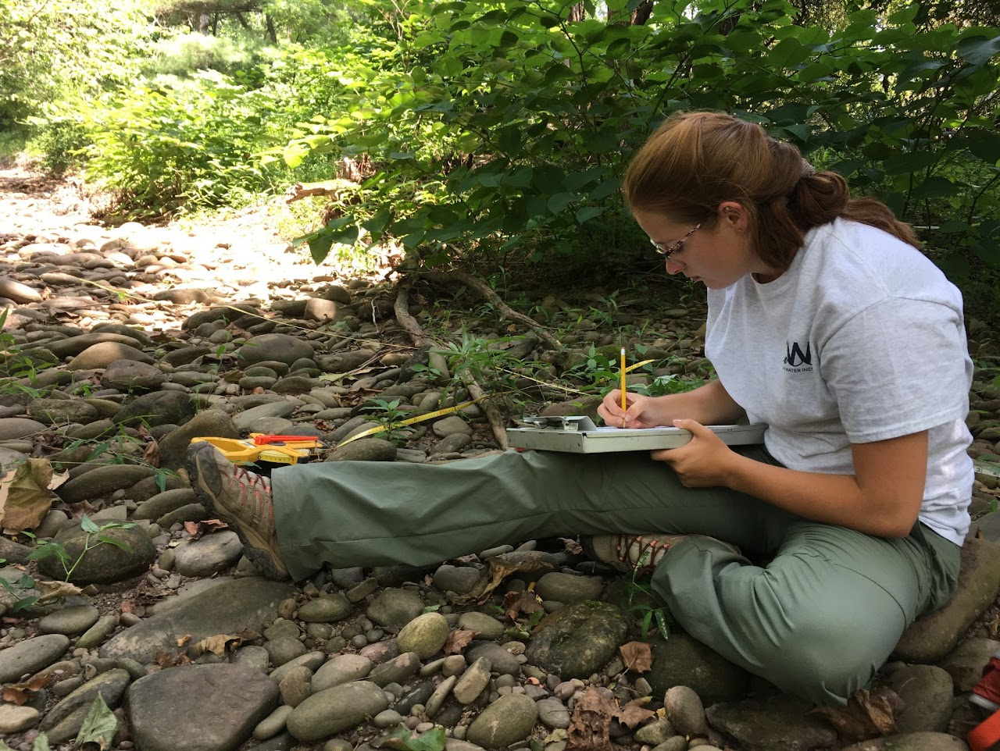
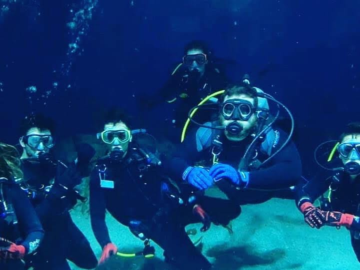
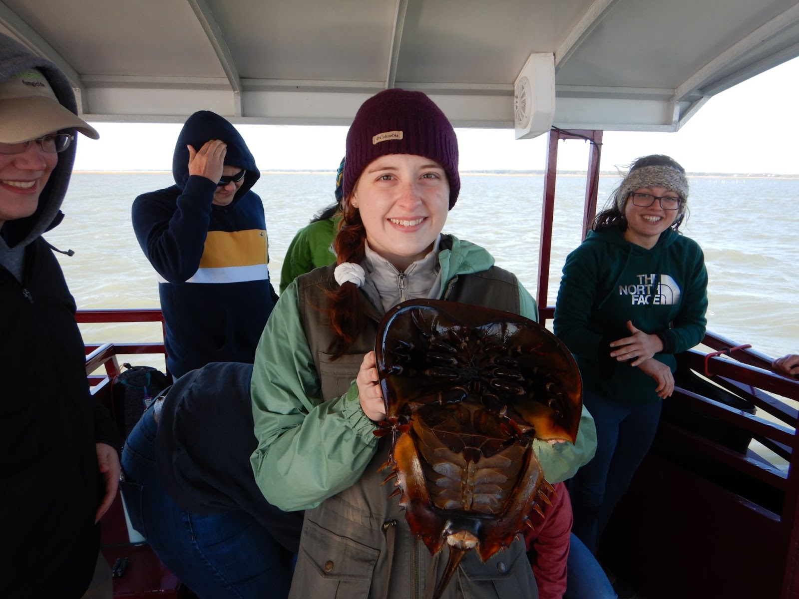
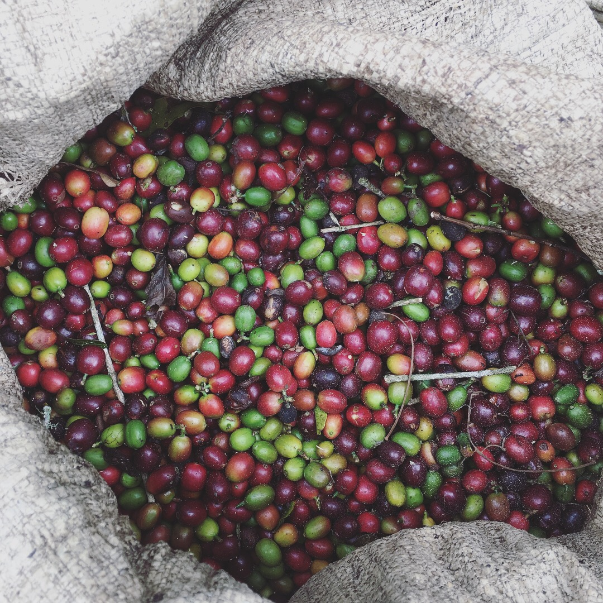
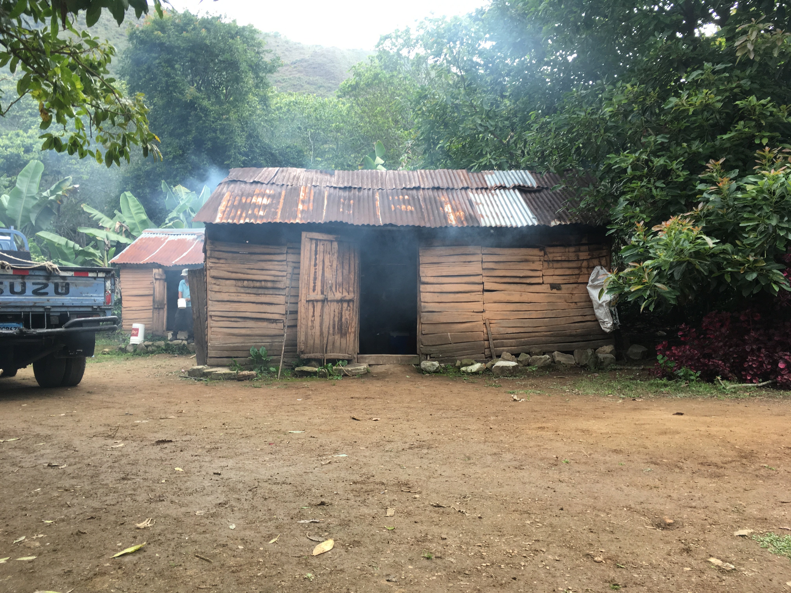
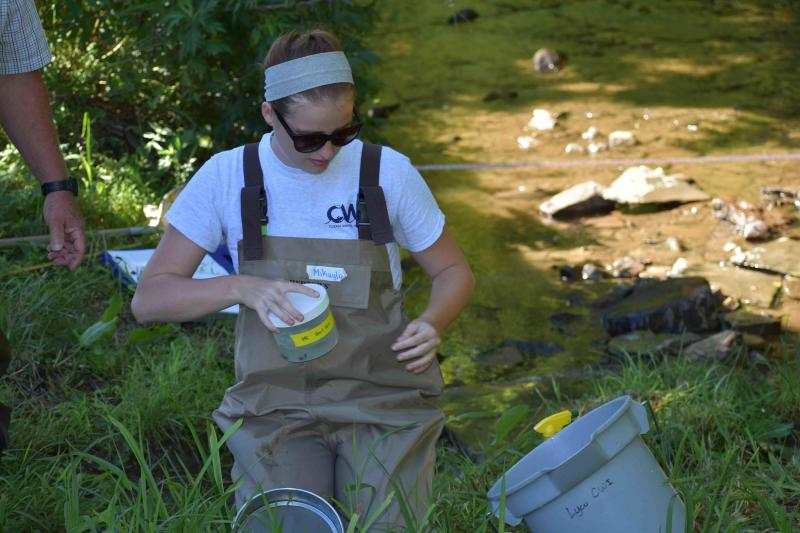
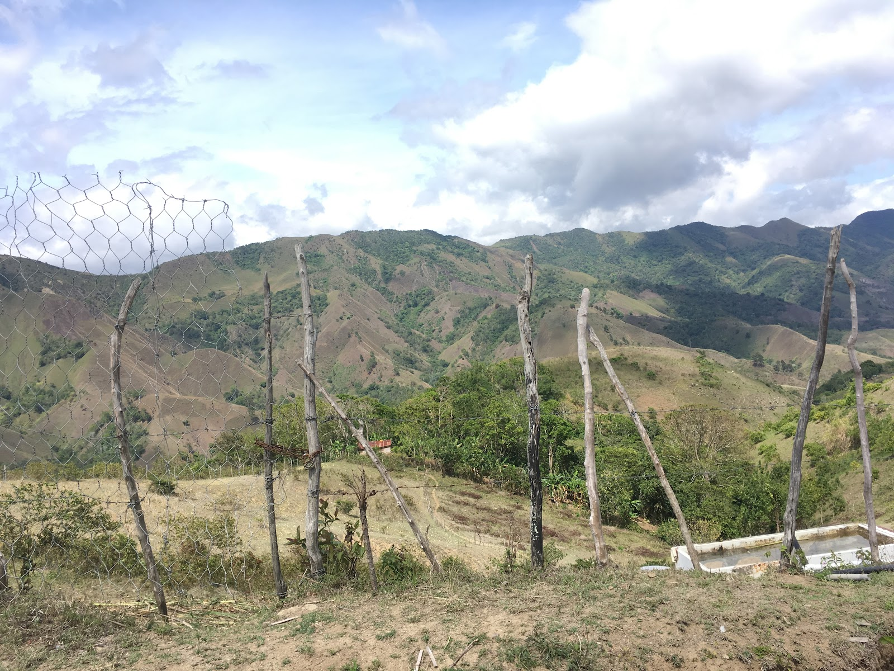
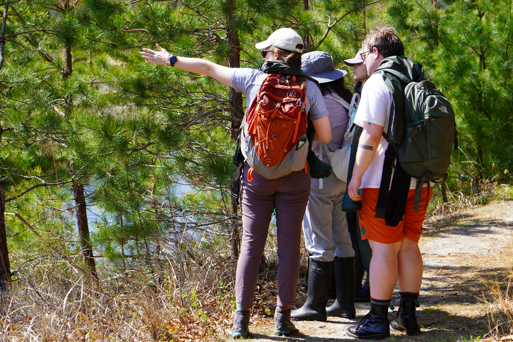

Portfolio · Blog & Guides · Data resources
“When one tugs at a single thing in nature, he finds it attached to the rest of the world.”— John Muir
I’m Mikayla Schappert, a geographer and landscape ecologist studying how landscapes shape biodiversity.
↓01 / Current work
Biodiversity through space, time, and sound.
My Ph.D. research investigates how land-change processes, scale of effect, and matrix quality shape acoustic communities in Brazil’s Atlantic Forest.
Explore all work →Field photography
Snapshots from the field.







